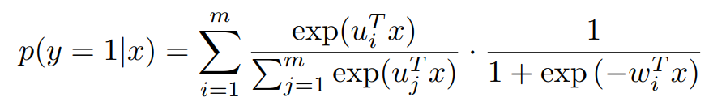
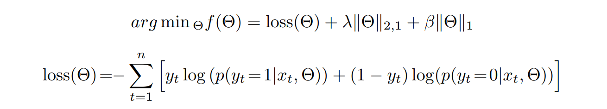
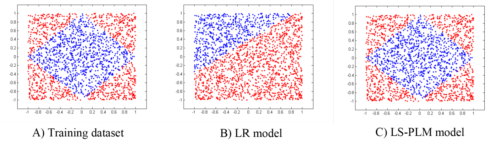

深度推荐模型的前夜：MLR
直观理解MLR
LS-PLM(Large Scale Piecewise Linear Model)，又称MLR(Mixed Logistic Regression)，从名字就可以看出，它是多个逻辑回归模型的组合。
对于某一数据集，假设用户特征为性别(男, 女)，物品特征为物品类别(键盘,女装)，即：
1 | 性别为男 性别为女 物品类别为键盘 物品类别为女装 是否点击(待预测标签) |
在该数据集上使用MLR时，首先会将该数据集的全部特征划分为若干区域，比如划分为如下4个区域：
1 | 性别为男 物品类别为键盘 |
在每一个区域，使用对应特征训练一个模型，比如逻辑回归模型。
当对新到来的样本进行预测时，MLR会预测该样本属于这些区域的概率(可以看作是权重)，然后分别使用每个区域对应的LR对样本进行预测，最后将每个LR的预测结果加权求和得到最终的预测结果。
数学定义
MLR的数学定义如下：

$m$是分片数，上面所说的特征被划分为几个区域，分片数就是几。
第一部分就是预测样本$x$属于划分后的这些区域的概率，它是一个softmax的形式，需要学习的参数是$\mu_1,…,\mu_m$；第二部分是逻辑回归模型，需要学习的参数是$w_1,…,w_m$.
MLR的优化目标如下：

这就是一个加了正则项的交叉熵损失。
对比MLR与LR
下面这张图对LR和MLR进行了对比：

对于数据分布非线性的二分类训练集，MLR能够近乎正确的将其分开，而LR不能。由此可见，相比于LR，MLR更能够捕捉到数据集中的非线性，拟合能力也更强大。
陌生又熟悉
MLR其实有点深度学习的味道了：
对于输入的样本$x$，MLR在划分的m个区域内分别对样本进行逻辑回归预测，得到m个结果(从输入层到隐藏层)，再将这些结果分别加权(施加注意力)，最后将加权后的结果进行相加得到最终的预测结果(施加注意力后的隐藏层到输出层)。
参考：